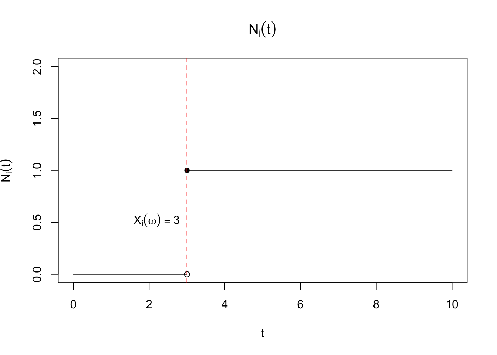

Lecture 17: Counting processes
1 Martingales and stochastic processes
Modern treatments of the theory of survival analysis depend on martingales, which can be thought of as a generalization of stationarity. This chapter is nearly verbatim from Aalen, Borgan, and Gjessing (2008).
1.1 Discrete time martingales
Let \(M = \{M_0, M_1, M_2, \dots\}\) be a stochastic process in discrete time. This means we can define a sample path for a given \(\omega\) as defining a function \(M(\omega) = \{M_0(\omega), M_1(\omega), M_2(\omega), \dots\}\) defined on the nonnegative integers. \(M\) is a martingale if the following holds true: \[\begin{align} \label{eq:one-step-martingale} \Exp{M_n \mid M_0, \dots, M_{n-1}} = M_{n-1}. \end{align}\] This means that the conditional expectation of the next random variable \(M_n\) given all information preceding it, is \(M_{n-1}\). This property extends so that the conditional expectation of any \(j \geq 2\) step-ahead value, \(M_{n+j-1}\), is \(M_{n-1}\): \[\begin{align} \Exp{M_{n+j-1} \mid M_0, \dots, M_{n-1}} & = \Exp{\Exp{M_{n+j-1} \mid M_0, \dots, M_{n-1}, M_n, \dots, M_{n+j-2}} \mid M_0, \dots, M_{n-1}} \\ & = \Exp{M_{n+j-2} \mid M_0, \dots, M_{n-1}} \end{align}\] We can apply this property \(j-1\) times to get back to [eq:one-step-martingale]. The idea of a collection of random variables, and all the information that can be represented with those RVs, that expands as the time index increases, is called a filtration. It is just a way of representing all the events related to past values of the stochastic process, and we’ll write the information up to and including time step \(m\) as \[\mathcal{F}_m.\] Note that \(\mathcal{F}_m \subset \mathcal{F}_n\) for all \(m < n\). This represents the intuitive idea that information accrues as time marches forward. This collection of information may contain events that are external to events involving the martingale, like covariate values. We can equivalently write the above: \[\begin{align} \Exp{M_n \mid \mathcal{F}_{n-1}} = M_{n-1}. \end{align}\] \[\begin{align} \Exp{M_{n+j-1} \mid \mathcal{F}_{n-1}} & = \Exp{\Exp{M_{n+j-1} \mid \mathcal{F}_{n+j-2}} \mid \mathcal{F}_{n-1}} \\ & = \Exp{M_{n+j-2} \mid \mathcal{F}_{n-1}} \end{align}\] We say that the martingale \(M\) is adapted to the filtration \(\mathcal{F}_n\) to mean that \(M_0, \dots, M_n\) are measurable with respect to \(\mathcal{F}_n\). Consequently, \[\Exp{M_{m} \mid \mathcal{F}_{n}} = M_m,\, m \leq n\] We can use the same argument as we did above to show that the unconditional expected value for \(M_n\) at any time \(n>0\) is equal to the marginal expectation of \(M_0\): \[\begin{align} \Exp{M_{n}} & = \Exp{\Exp{M_{n} \mid \mathcal{F}_{0}}} \\ & = \Exp{M_{0}} \end{align}\] In much of what we do in survival analysis, \(\Exp{M_{0}} = 0\), and the processes \(M_n\) are thus called a mean-zero martingales. We can also show that for mean-zero martingales: \[\begin{align} \text{Cov}\left(M_{m}, M_{n} - M_m \right) & = 0 \end{align}\] for all \(n > m\). This means that the martingale has uncorrelated increments. We can show this using both properties of the martingale that we’ve learned above. \[\begin{align} \text{Cov}\left(M_{m}, M_{n} - M_m \right) & = \Exp{M_m(M_n - M_m)} - \Exp{M_m}\Exp{M_n} \\ & = \Exp{\Exp{M_m(M_n - M_m) \mid \mathcal{F}_m}} - \Exp{M_0}^2\\ & = \Exp{M_m\Exp{M_n\mid \mathcal{F}_m} - M_m^2}\\ h & = \Exp{M_m^2 - M_m^2}\\ & = 0 \end{align}\]
Martingales also have nice variation properties. There are two measures of variation we can use: predictable variation and optional variation. Predictable variaton is is the sum of the conditional variances of the martingale. Let \(\Delta M_n = M_n - M_{n-1}\), then we can write the predictable variation process as \[\braket{M}_n = \sum_{i=1}^n \Exp{(M_i - M_{i-1})^2 \mid \mathcal{F}_{i-1}} = \sum_{i=1}^n \Var{\Delta M_i \mid \mathcal{F}_{i-1}},\] and \(\braket{M}_0 = 0\). Optional variation is defined as \[[M]_n = \sum_{i=1}^n (M_i - M_{i-1})^2 = \sum_{i=1}^n (\Delta M_i)^2,\] where we similarly define \([M]_0 = 0\). For martingales, it turns out that we can define other martingales related to these variation processes: \[M^2 - \braket{M}, \, M^2 - [M]\] are both mean zero martingales. Note that \[M_n^2 = (M_{n-1} + M_n - M_{n-1})^2, \, [M]_n = [M]_{n-1} + (M_n - M_{n-1})^2\] \[\begin{align} & \Exp{M_n^2 - [M]_n \mid \mathcal{F}_{n-1}} \\ & \quad = \Exp{M^2_{n-1} + 2M_{n-1}(M_n - M_{n-1}) + (M_n - M_{n-1})^2 - [M]_{n-1} - (M_n - M_{n-1})^2 \mid \mathcal{F}_{n-1}} \\ & \quad = \Exp{M^2_{n-1} + 2M_{n-1}(M_n - M_{n-1}) - [M]_{n-1} \mid \mathcal{F}_{n-1}} \\ & \quad = M^2_{n-1}-[M]_{n-1} + 2M_{n-1}\Exp{M_n - M_{n-1}\mid \mathcal{F}_{n-1}} \\ & \quad = M^2_{n-1}-[M]_{n-1} \end{align}\] Thus \(M_n^2 - [M]_n\) it is a martingale.
Another important property is when we transform a martingale by some predictable process. A predictable process, written \(H_n\), is something that is measurable with respect to \(\mathcal{F}_{n-1}\). The transformation is written: \[Z = H \cdot M = H_0 M_0 + H_1 (M_1 - M_0) + H_2 (M_2 - M_1) + \dots\] where \(Z_n\) is defined: \[Z_n = H_0 M_0 + H_1 (M_1 - M_0) + \dots + H_n (M_n - M_{n-1})\] Given that \(H\) is predictable, this transformed process is also a martingale: \[\begin{align} \Exp{Z_n - Z_{n-1} \mid \mathcal{F}_{n-1}} & = \Exp{H_n(M_n - M_{n-1}) \mid \mathcal{F}_{n-1}} \\ & = H_n\Exp{M_n - M_{n-1} \mid \mathcal{F}_{n-1}} \\ & = 0 \end{align}\] Given that \(\Exp{M_0} = 0\) and \(H_0\) is predictable, this is also a mean zero martingale Importantly, the variation processes of these transfomrations have nice properties: \[\braket{H \cdot M} = H^2 \cdot \braket{M}, \, [H \cdot M] = H^2 \cdot [M]\] This transformation is important because we can formulate stopping times as a transformation.
A stopping time \(T\) is defined as an event \({T = t}\) that is dependent on only information known prior to and including time \(t\). We can define a martingale, \(M_n^T = M_{n \wedge T}\), called a martingale stopped at time \(T\). This is still a martingale, which we can show by creating the process \(M^T\) as a transformation with \(H_n\) defined as: \[H_n = \mathbbm{1}\left(n \leq T\right)\] This leads to the transformed process defined as: \[Z_n = \mathbbm{1}\left(0 \leq T\right) M_0 + \sum_{k = 1}^n \mathbbm{1}\left(k \leq T\right) (M_k - M_{k-1}).\] Thus, for any \(n \leq T\), \(Z_n = M_n\), and for \(n > T\) \(Z_n = M_T\).
1.2 Doob Decomposition
The Doob decomposition is a way to rewrite any stochastic process as the sum of a predictable process and a martingale. Let \(X=\{X_0, X_1, X_2, \dots\}\) be a stochastic process that is adapted to a history \(\mathcal{F}_n\) with \(X_0 = 0\) and define \(M_0 = X_0\) and \(M_n - M_{n-1}= X_n - \Exp{X_n \mid \mathcal{F}_{n-1}}\). Note that \[\begin{align} \Exp{M_n - M_{n-1} \mid \mathcal{F}_{n-1}} & = \Exp{X_n - \Exp{X_n \mid \mathcal{F}_{n-1}} \mid \mathcal{F}_{n-1}} \\ & = \Exp{X_n \mid \mathcal{F}_{n-1}} - \Exp{X_n \mid \mathcal{F}_{n-1}} \\ & = 0 \end{align}\] This shows that \(\Delta M_n = M_n - M_{n-1}\) is a mean-zero martingale. We can rearrange things to get: \[\begin{align} X_n & = \Exp{X_n \mid \mathcal{F}_{n-1}}+ \Delta M_n \end{align}\]
1.3 Continuous time martingales
There are continuous time analogues of martingales, and these are what the theory of survival analysis is built on. Let the stochastic process \(\{M(t), t \in [0, \tau]\}\) be adapted to the filtration \(\{\mathcal{F}_t\}\). The way to think about this process is that in the probability space \((\Omega, \mathcal{B}, P)\), where \(\mathcal{B}\) the sigma algebra for the sample space \(\Omega\), given \(\omega \in \Omega\), \(M(t,\omega)\) is a function defined for all \(t \in [0, \tau]\). This means we can define things like \(\Delta M_k = M(k t / n) - M((k-1) t / n)\), which are the changes in the martingale in the \(k^{\mathrm{th}}\) interval of the discretized interval of \([0,t]\) into \(n\) intervals. \[\Exp{M(t) \mid \mathcal{F}_s} = M(s), \forall t > s\] We can define something akin to \(\Delta M_n\) in continuous time written as \(dM(t)\), which is the increment of \(M(t)\) in the interval \([t, t+dt)\). Another way to define this property is \[\Exp{dM(t) \mid \mathcal{F}_{t-}} = 0\] We assume that \(M(0) = 0\) for the rest of the chapter. Then \(\Exp{M(t)} = 0\) for all \(t\). Under this assumption, \[\text{Cov}\left(M(t) - M(s), M(v) - M(u) \right) = 0\] for the intervals \(0 \leq s < t < u < v \leq \tau\).
We define \(\braket{M}(t)\) as the limit of sums of conditional variances of the increasingly-fine differences \[\Delta M_k = M(kt/n) - M((k-1)t/n):\] \[\braket{M}(t) = \lim_{n\to\infty} \sum_{k=1}^n \text{Var}(\Delta M_k \mid \mathcal{F}_{(k-1)t/n}),\] and \([M](t)\) as the limit of sums of squared \(\Delta M_k\): \[[M](t) = \lim_{n\to\infty} \sum_{k=1}^n \left(\Delta M_k\right)^2.\] Just as for the discrete time processes, \(M^2 - \braket{M}\) and \(M^2 - [M]\) are both zero-mean martingales. Given that \(\Exp{M(t)} = 0\) for all \(t\), we have that \[\begin{align} \text{Var}(M(t)) & = \Exp{M^2(t)} \\ & = \Exp{\braket{M}(t)} \\ & = \Exp{[M](t)} \end{align}\] Thus, the variation processes are can be used to represent the variance of the martingale.
We can define integrals with respect to \(M(t)\) for predictable processes \(H(t)\), which are measurable with respect to \(\mathcal{F}_{t-}\), or, \(\Exp{H(t) \mid \mathcal{F}_{t-}} = H(t)\): \[I(t) = \int_0^t H(s) dM(s)\] Similarly to the variation processes, this is defined as the following limit: \[I(t) = \lim_{n\to\infty}\sum_{k=1}^n H_k \Delta M_k\] where \(H_k = H((k-1) t / n)\) \[\Delta M_k = M(k t / n) - M((k-1) t / n)\] Note that this definition is fine for martingales that are defined with repsect to counting processes, and it isn’t valid for all stochastic processes.
Given that we’ve defined the integral in this way, we can immediately use the transformation property we had in discrete time to show that \(I(t)\) is a mean-zero martingale with respect to \(\{\mathcal{F}_t\}\).
We also have the following useful results for the variation processes of transformed martingales: \[\braket{\int_{0}^t H(s) dM(s)} = \int_{0}^t H^2(s) d\braket{M}(s),[\int_{0}^t H(s) dM(s)] = \int_{0}^t H^2(s) d[M](s)\]
1.4 Doob-Meyer Decomposition
The most important
2 Counting process formulation
Another way to think about the information contained in the time-to-infection data is as follows: For each participant \(i\) and for each instant \(t\) one may define the quantities \(N_i(t) = \mathbbm{1}\left(X_i \leq t\right)\) and \(Y_i(t) = \mathbbm{1}\left(X_i \geq t\right)\), which encode the information “Has infection occurred for participant \(i\) prior to \(t\)?” and “Is participant \(i\) at risk for infection at time \(t\)?”. These are examples of stochastic processes, because they are random variables indexed by \(t\). Another way to think of them is as functions of \(t\) that are random. More formally, let \(X_i(\omega)\) be a random variable defined with respect to the triplet \((\Omega, \mathcal{B}, P)\) such that \(X_i: \Omega \to \R^+\). Then \(N_i(t)\) is really properly defined as \(N_i(t, \omega)\) so that for each \(\omega\), or equivalently, each realization of \(X_i\), \(N_i(t,\omega)\) is a right-continuous function of \(t\). This means that \(\lim_{\epsilon \to 0} N_i(t + \epsilon) = N_i(t) \forall t\). An example is shown in 3.1.
Of course, a natural quantity that arises from our definition is \(\Exp{N_i(t)} = \Exp{\mathbbm{1}\left(X_i \leq t\right)} = F_{X_i}(t)\) or the cumulative distribution function of \(X_i\). The hazard function leads to an important identity for \(\Exp{N_i(t)}\): \[\begin{align} \Exp{N_i(t)} & = \int_{0}^\infty \mathbbm{1}\left(x \leq t\right) f_{X_i}(x) dx \\ & = \int_{0}^t f_{X_i}(x) dx \\ & =\int_{0}^t \lambda_i(x) \Prob{X_i \geq x} dx \\ & =\int_{0}^t \lambda_i(x) \Exp{\mathbbm{1}\left(X_i \geq x\right)} dx \\ & =\Exp{\int_{0}^t \lambda_i(x) \mathbbm{1}\left(X_i \geq x\right) dx}. \label{eq:martin} \end{align}\] It immediately follows that \[\Exp{N_i(t) - \int_{0}^t \lambda_i(x) \mathbbm{1}\left(X_i \geq x\right) dx} = 0.\] Several mathematical details have been elided, but are worth keeping in mind. The integral \[\begin{align} \label{eq:stoch-int} \int_{0}^t \lambda_i(x) \mathbbm{1}\left(X_i \geq x\right) dx \end{align}\] needs to be well-defined for this property to make sense. Note that this is an integral of a function against a stochastic process, thus the value of the integral is a random variable, ultimately defined with respect to \((\Omega, \mathcal{B}, P)\). Conditions for determining if [eq:stoch-int] is well-defined are outlined in Appendix A in (Fleming and Harrington 2005). One question we might have is whether we can define the integral with respect to a smaller \(\sigma\)-algebra, one that includes information only through time \(t\). This notion ties into the idea of a a “history”, which has both a technical meaning as well as its more common meaning in survival analysis. The reason for trying to define a smaller set of information is because this is how survival data arises in practice; we don’t know the future, namely what the value of \(X_i\) for any particular \(\omega\) is, we only know whether \(X_i\) has occurred or not up to a give time \(t\).
This motivates the idea of a filtration, which is a family of \(\sigma\)-algebras, \(\{\mathcal{F}_t, 0 \leq t \leq \infty\}\) such that \(\mathcal{F}_s \subset \mathcal{F}_t\) for all \(s < t\). When \(N_i(t) = \mathbbm{1}\left(X_i \leq t\right)\), the simplest \(\sigma\)-algebra would be \(\sigma(\mathbbm{1}\left(X_i \leq s\right), s \leq t)\). Note that this consists of sets of \[\{\omega \mid X_i(\omega) \leq s, s \leq t \}\] This is equivalent to the \(\sigma\)-algebra generated from the random variable itself limited to the interval \([0,t]\): \[\sigma(X_i(s), s \leq t) = \{\omega \mid X_i(\omega) \leq s, s \leq t \}\] Note that this \(\sigma\)-algebra contains information on whether the event \(X_i\) has occurred by time \(t\), but it contains the same information as the information about \(X_i\) on the interval \([0,t]\). Informally, we haven’t lost information by moving from a real-valued random variable to a counting process.
We say that the stochastic process \(\{N_i(t), 0 \leq t \leq \infty\}\) is adapted to a filtration \(\{\mathcal{F}_t, 0 \leq t \leq \infty \}\) to mean that \(N_i(t)\) is measurable with respect to each \(\mathcal{F}_t\). This is trivially achieved by using the \(\sigma\)-algebra generated by the counting process itself, and this filtration will be called the history of the counting process.
The property that \[N_i(t) - \int_{0}^t \lambda_i(x) \mathbbm{1}\left(X_i \geq x\right) dx \tag{1}\] has expectation zero is central to much of the modern theoretical treatment of survival analysis.
In fact, the quantity Equation 1 exhibits a stronger property, namely that \[ \Exp{N_i(t + s) - \int_{0}^{t + s} \lambda_i(x) \mathbbm{1}\left(X_i \geq x\right) dx \mid \mathcal{F}_t} = N_i(t) - \int_{0}^{t} \lambda_i(x) \mathbbm{1}\left(X_i \geq x\right) dx \tag{2}\]
Proof. This is adapted from Fleming and Harrington (2005). First, let’s rewrite the term on the LHS of Equation 2: \[ \begin{aligned} & \Exp{N_i(t + s) - \int_{0}^{t + s} \lambda_i(x) \mathbbm{1}\left(X_i \geq x\right) dx \mid \mathcal{F}_t} \\ & = \Exp{N_i(t + s) - N_i(t) + \int_{0}^{t} \lambda_i(x) \mathbbm{1}\left(X_i \geq x\right) dx- \int_{0}^{t + s} \lambda_i(x) \mathbbm{1}\left(X_i \geq x\right) dx \mid \mathcal{F}_t} \\ & + N_i(t) - \int_{0}^{t} \lambda_i(x) \mathbbm{1}\left(X_i \geq x\right) dx \\ & = N_i(t) - \int_{0}^{t} \lambda_i(x) \mathbbm{1}\left(X_i \geq x\right) dx \\ & + \Exp{N_i(t + s) - N_i(t) \mid \mathcal{F}_t} - \Exp{\int_{t}^{t+s} \lambda_i(x) \mathbbm{1}\left(X_i \geq x\right) dx \mid \mathcal{F}_t} \end{aligned} \] Now we need to show that \[ \Exp{N_i(t + s) - N_i(t) \mid \mathcal{F}_t} = \Exp{\int_{t}^{t+s} \lambda_i(x) \mathbbm{1}\left(X_i \geq x\right) dx \mid \mathcal{F}_t} \] The tricky part here is the conditioning on the filtration \(\mathcal{F}_t\). Fleming and Harrington (2005) use the following property of conditional expectations: For \(Y\) defined on a probability space \((\Omega, \mathcal{F}, P)\) and a sub-sigma algebra \(\mathcal{G} \subseteq \mathcal{F}\) and \(B \in \mathcal{G}\)
\[ \int_{B} Y \mathrm{d}P = \int_B \Exp{Y \mid \mathcal{G}} \mathrm{d}P \] They show an example that gives some more intuition for where this property comes from. Let \(Y, Z\) be distributed according to joint distribution \(F_{Y,Z}(y,z)\) with associated joint density \(f_{Y,Z}(y,z)\) and let \(h_{Y\mid Z}(y \mid Z) = f_{Y,Z}(y,z) / \int_{-\infty}^\infty f_{Y,Z}(u,z) du\)
The benefit of this treatment is that counting processes add together. Let \(\bar{N}(t) = \sum_{i=1}^n N_i(t)\). Assume that \(\lambda_i(t) = \lambda(t)\). Recall that \(Y_i(t) = \mathbbm{1}\left(X_i \geq t\right)\), so let \(\bar{Y}(t) = \sum_{i=1}^n Y_i(t)\). Then \[P(\bar{N}(t + \epsilon) - \bar{N}(t) = 1 \mid \mathcal{F}_{t-}) \approxeq \bar{Y}(t)\lambda(t) dt\] Let \(d\bar{N}(t) = \bar{N}(t + \epsilon) - \bar{N}(t) = 1)\), so we can rewrite the above equation as: \[\Exp{d\bar{N}(t) \mid \mathcal{F}_{t-}} = \bar{Y}(t)\lambda(t) dt \implies \Exp{d\bar{N}(t) - \bar{Y}(t)\lambda(t) dt \mid \mathcal{F}_{t-}} = 0.\] We also have, by virtue of the linearity of expectation and [eq:martin]: \[\Exp{\bar{N}(t) - \int_{0}^t \lambda(x) \bar{Y}(x) dx} = 0.\] Then this process, which we’ll call \(M(t) = \bar{N}(t) - \int_{0}^t \lambda(x) \bar{Y}(x) dx\), is what is called a martingale. A martingale satisfies three properties:
\(M\) is adapted to the filtration \(\{\mathcal{F}_t, t \geq 0\}\)
\(\Exp{\left| M(t) \right|} < \infty\) for all \(t\)
\(\Exp{M(t + s) \mid \mathcal{F}_t} = M(t)\) for all \(s > 0\)
There are also two modifcations of martingales, submartingales and supermartingales. Submartingales replace the third property with \[\Exp{M(t + s) \mid \mathcal{F}_t} \geq M(t),\] while supermartingales are defined by: \[\Exp{M(t + s) \mid \mathcal{F}_t} \leq M(t).\] First, we can see that \(N(t)\) is a submartingale: it is a nondecreasing random variable, and, as such, it has a positive drift in expectation. Second is that martingales are robust to many transformations. We’ll start with discrete time martingales before moving to continuous time martingales.
Crucially, we haven’t used independence here. Informally, we can write differential of term inside the integral: \[d \left(\bar{N}(t) - \int_{0}^t \lambda(x) \bar{Y}(x) dx\right)= d \bar{N}(t) - \lambda(t) \bar{Y}(t) dt\] We can write this quantity as \(d\bar{M}(t)\) so that \[d \bar{N}(t) = \lambda(t) \bar{Y}(t) dt + d\bar{M}(t)\] where \(\Exp{d\bar{M}(t)} = 0\). We can divide each side by \(\bar{Y}(t)\) as long as \(\bar{Y}(t) > 0\). If we introduce the indicator variable \(J(t) = \mathbbm{1}\left(\bar{Y}(t) > 0\right)\) and the convention that \(J(t) / \bar{Y}(t) = 0\) when \(\bar{Y}(t) = 0\) the equation becomes: \[\frac{J(t)}{\bar{Y}(t)}d \bar{N}(t) = J(t) \lambda(t) dt + \frac{J(t)}{\bar{Y}(t)}d\bar{M}(t)\] Integrating both sides yields an alternative estimand for \(\int_0^u \lambda(t) dt\): \[\int_0^u \frac{J(t)}{\bar{Y}(t)}d \bar{N}(t) = \int_0^u J(t) \lambda(t) dt + \int_0^u\frac{J(t)}{\bar{Y}(t)}d\bar{M}(t)\] The second term on the RHS is mean zero, so \[\Exp{\int_0^u \frac{J(t)}{\bar{Y}(t)}d \bar{N}(t)} = \Exp{\int_0^u J(t) \lambda(t) dt}.\] If \(J(t) \approxeq 1\) then the estimator is approximately unbiased.
We will return to this idea later in the course.
We can define the indicator variable \(\mathbbm{1}\left(u = t_i\right)\), which allows us to write the evaluation of the hazard function at time \(t_i\), \(\lambda_X(t_i)\), as \[\prod_{0 < u < \infty} (Y_{t_i}(u) \lambda_X(u))^{\mathbbm{1}\left(u = t_i\right)}.\] Recall our identity from earlier in the class that we can write the survival function in continuous time in terms of products of incremental probabilities. Let’s say we partition our interval \([0,t)\) into \(n\) equally sized bits of size \(\Delta t\): \[\begin{align*} P(X > t) & = P(X \geq 0) P(X > \Delta t \mid X \geq 0) P(X > 2 \Delta t \mid X \geq \Delta t) \dots P(X > t \mid X \geq (n - 1) \Delta t) \\ & = 1 \times (1 - \lambda_X(0) \Delta t) (1 - \lambda_X(\Delta t) \Delta t) \dots (1 - \lambda_X((n-1) \Delta t) \Delta t) \\ & = \prod_{0 < u < t} (1 - \lambda_X(u) \Delta t) \end{align*}\] We showed in [sec:disc-continue] that this expression converges to \[\exp(-\int_0^t \lambda_X(u) du)\] as \(n \to \infty\). We could rewrite the product with the help of the function \(Y_t(u)\) as follows: \[\begin{align*} \prod_{0 < u < t} (1 - \lambda_X(u) \Delta t) = \prod_{0 < u < \infty} (1 - Y_t(u) \lambda_X(u) \Delta t)^{1 - \mathbbm{1}\left(u = t\right)} \end{align*}\] which implies that we can rewrite the likelihood in terms of the product limit: \[\begin{align*} f_X(t_i) & = \lambda_X(t_i) S_X(t_i) \\ & = \prod_{0 < u < \infty}(Y_{t_i}(u)\lambda_X(u))^{\mathbbm{1}\left(u = t_i\right)} (1 - Y_{t_i}(u) \lambda_X(u) \Delta t)^{1-\mathbbm{1}\left(u = t_i\right)} \end{align*}\]
When we have multiple observations, \(i \in 1, \dots, n\), we get the following likelihood: \[\begin{align*} L_(\theta) & = \prod_{i=1}^n \prod_{0 < u < \infty}(Y_{t_i}(u)\lambda_X(u))^{\mathbbm{1}\left(u = t_i\right)} (1 - Y_{t_i}(u) \lambda_X(u) \Delta t)^{1-\mathbbm{1}\left(u = t_i\right)} \\ & = \prod_{0 < u < \infty}\prod_{i=1}^n (Y_{t_i}(u)\lambda_X(u))^{\mathbbm{1}\left(u = t_i\right)} (1 - Y_{t_i}(u) \lambda_X(u) \Delta t)^{1-\mathbbm{1}\left(u = t_i\right)} \end{align*}\] Taking logs and evaluating the product gives us \[\begin{align*} \ell_(\theta) & = \sum_{0 < u < \infty}\sum_{i=1}^n \mathbbm{1}\left(u = t_i\right)\log(Y_{t_i}(u)\lambda_X(u)) + (1-\mathbbm{1}\left(u = t_i\right))\log(1 - Y_{t_i}(u) \lambda_X(u) \Delta t) \end{align*}\] Taking the derivative with respect to \(\lambda_X(u)\) gives us:
What do we do in the presence of noninformative right-censoring?
Remember that we have the equality: \[\begin{align*} \Prob{t \leq X_i < t + \Delta t \mid X_i \geq t} = \Prob{t \leq X_i < t + \Delta t \mid X_i \geq t, C_i \geq t}. \end{align*}\] Let’s assume we have a density for the censoring variables \(C_i\): \[f_{C}(c) = \lambda_C(c) S_C(c)\] Then the joint density \(f_{X,C}(x,c) =\)
The joint likelihood for \(X_i\) for iid observations of right censored data is: \[f_{\mathbf{X}}(t_1, \dots, t_n) = \prod_{i=1}^n \lambda_X(t_i)^{\delta_i} S_X(t_i).\] This equals \[f_{\mathbf{X}}(t_1, \dots, t_n) = \left(\prod_{i=1}^n \lambda_X(t_i)^{\delta_i}\right)\exp\left(-\sum_{i=1}^n \int_0^{t_i} \lambda_X(u) du\right) .\] For the joint likelihood of \(X_i, C_i\) see [chap:intro].
References
Aalen, Odd, Ornulf Borgan, and Hakon Gjessing. 2008. Survival and Event History Analysis: A Process Point of View. Springer Science & Business Media.
Fleming, Thomas R, and David P Harrington. 2005. “Counting Processes and Survival Analysis.” Wiley Series in Probability and Statistics.